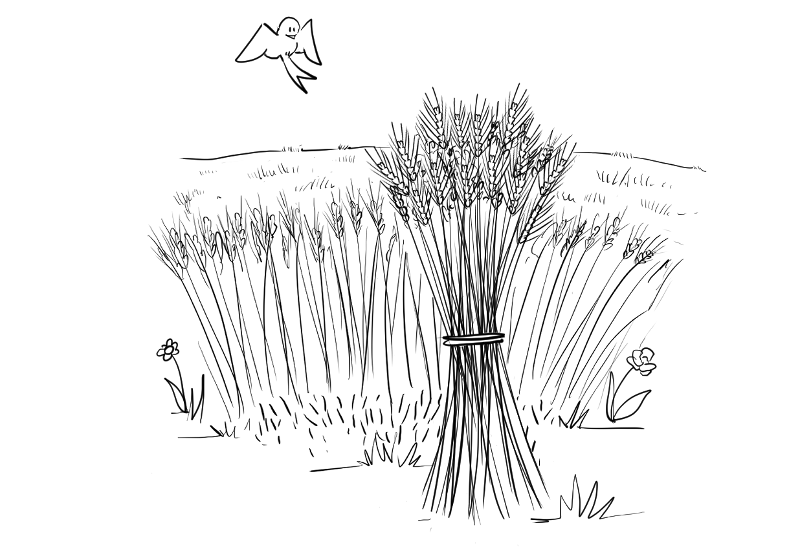
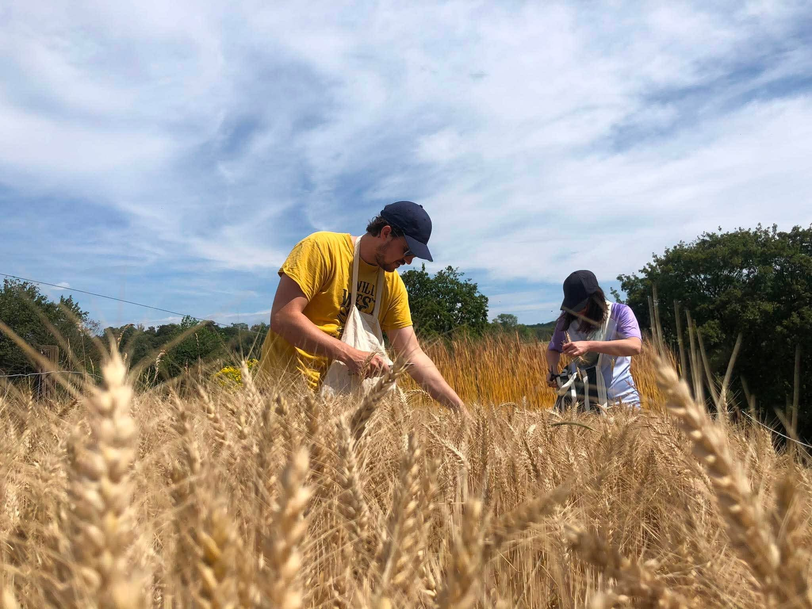
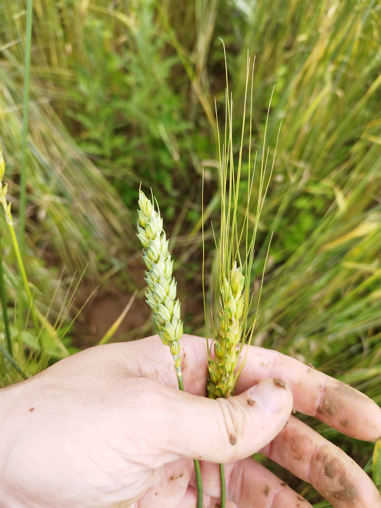
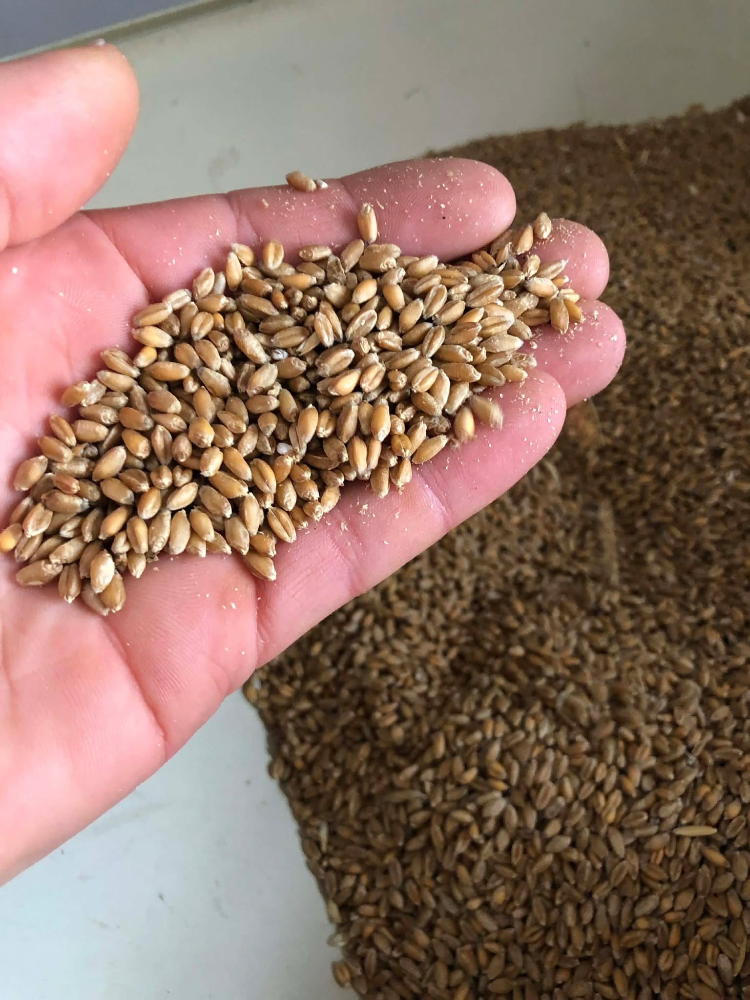

L'étude agronomique de notre sol 🪱
Notre atelier céréalier repose sur 13 à 15 hectares de terres conduites en agriculture biologique stricte, avec zéro intrant phytosanitaire. Le sol, historiquement en prairies, est limoneux avec un pH de 7,5 et possède un taux exceptionnel de matière organique de 6,3 %[cite: 3].
Pour nous assurer que cette terre résistera aux fortes pluies sans se tasser, nous avons calculé son Indice de Battance (IB) :
Avec un résultat de 1,034 (bien en dessous du seuil critique de 1,4), notre terre est robuste et très poreuse[cite: 3].
Une rotation régénérative sur 6 ans 🔄
Sans aucun engrais chimique, notre meilleure méthode pour maintenir la fertilité et casser le cycle des maladies est une longue rotation sur nos parcelles[cite: 3] :
| Année | Culture | Rôle agronomique |
|---|---|---|
| 1 à 3 | Luzerne + Dactyle | Nettoie le sol, structure la terre et fixe l'azote naturel[cite: 3]. |
| 4 et 5 | Blé tendre d'hiver | Culture reine pour la boulangerie, exigeante en fertilité[cite: 3]. |
| 6 | Seigle / Engrain | Cultures très rustiques adaptées aux sols en fin de cycle[cite: 3]. |
Semences paysannes et résilience climatique 🌾
Pour compenser l'exportation des nutriments, nous amendons la terre avec les fumiers compostés de nos élevages[cite: 3]. Nous semons ensuite des "cultures de population" (un mélange de blés rustiques et anciens comme le Renan, Gwen, Geny)[cite: 3].
Ces variétés anciennes ont un rendement limité (environ 3 tonnes à l'hectare), mais c'est un choix pleinement assumé. Elles sont beaucoup plus résilientes face aux aléas climatiques des années à venir et, surtout, elles offrent un intérêt gustatif et nutritionnel bien supérieur pour notre boulangerie.


